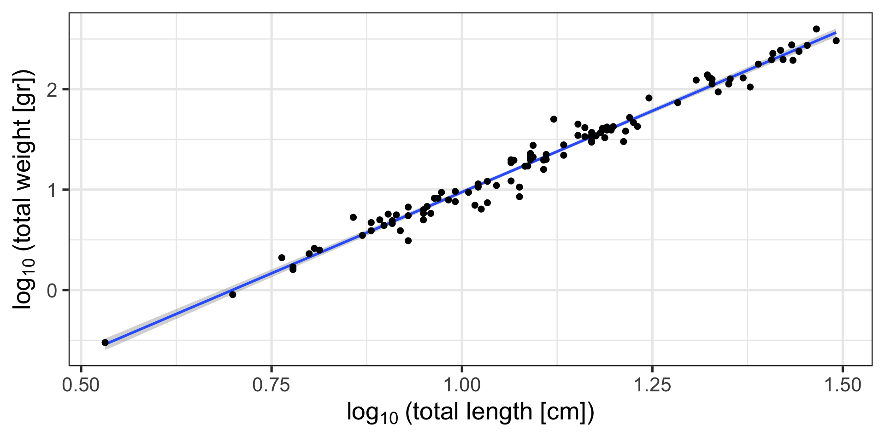

# A tibble: 807 × 25
location site transect genus_species TL_5 TL_10 TL_15 TL_20 TL_25 TL_30
<chr> <chr> <dbl> <chr> <dbl> <dbl> <dbl> <dbl> <dbl> <dbl>
1 ASA North 1 Alloclinus holde… NA 1 NA NA NA NA
2 ASA North 1 Caulolatilus pri… NA NA NA 3 NA NA
3 ASA North 1 Chromis punctipi… NA 14 NA NA NA NA
4 ASA North 1 Embiotoca jackso… NA NA NA 6 NA NA
5 ASA North 1 Embiotoca latera… NA NA NA 1 NA NA
6 ASA North 1 Girella nigricans NA NA NA NA 1 NA
7 ASA North 1 Hypsypops rubicu… NA NA NA 4 NA NA
8 ASA North 1 Oxyjulis califor… 2 61 46 NA NA NA
9 ASA North 1 Paralabrax clath… NA NA 1 NA NA NA
10 ASA North 1 Sebastes carnatus NA NA NA NA 1 NA
# ℹ 797 more rows
# ℹ 15 more variables: TL_35 <dbl>, TL_40 <dbl>, TL_45 <dbl>, TL_50 <dbl>,
# TL_55 <dbl>, TL_60 <dbl>, TL_65 <dbl>, TL_70 <lgl>, TL_75 <dbl>,
# TL_80 <dbl>, TL_85 <dbl>, TL_90 <dbl>, TL_95 <dbl>, TL_100 <dbl>,
# TL_105 <dbl>Data Tidying and Merging
EVR 628- Intro to Environmental Data Science
Juan Carlos Villaseñor-Derbez (JC)
Rosenstiel School of Marine, Atmospheric, and Earth Science and Institute for Data Science and Computing
Learning Objectives
By the end of this week, you should be able to:
- Understand the principles of tidy data
- Transform data between wide and long formats using
pivot_longer()andpivot_wider() - Merge datasets using different types of joins
- Apply data tidying techniques to real-world messy datasets
Tidy Data

See Wickham (2014) for a full description of tidy data principles an the reshape2 package (old)
Messy Data?
“Tidy datasets are all alike, but every messy dataset is messy in its own way.”
— Hadley Wickham
Two main reasons for lack of tidy data:
- Format was designed for data entry or human readability, not data analysis
- No foresight
The {tidyr} Package

{tidyr}: A package for tidying data in R
Core functions:
- Change the shape of your data with
pivot_longer()andpivot_wider - Dealing with missing values with
complete(),drop_na(),replace_na(), andfill()(not today)
Changing shape of data
Lengthening and widening with pivot_longer() and pivot_wider()
1) Lengthening data
Type of problem: Column names are values, not variables
Specifically: Total lengths are in column names instead of a total_length variable. There is no column for abundance.
Target
How should these data look like?
How many columns do we want?
What columns names do we want?
We want the data to be “longer”, with 6 columns:
locationsitetransectgenus_speciestotal_lengthabundance
The Messy Data Again
# A tibble: 5 × 25
location site transect genus_species TL_5 TL_10 TL_15 TL_20 TL_25 TL_30
<chr> <chr> <dbl> <chr> <dbl> <dbl> <dbl> <dbl> <dbl> <dbl>
1 ASA North 1 Alloclinus holderi NA 1 NA NA NA NA
2 ASA North 1 Caulolatilus prin… NA NA NA 3 NA NA
3 ASA North 1 Chromis punctipin… NA 14 NA NA NA NA
4 ASA North 1 Embiotoca jacksoni NA NA NA 6 NA NA
5 ASA North 1 Embiotoca lateral… NA NA NA 1 NA NA
# ℹ 15 more variables: TL_35 <dbl>, TL_40 <dbl>, TL_45 <dbl>, TL_50 <dbl>,
# TL_55 <dbl>, TL_60 <dbl>, TL_65 <dbl>, TL_70 <lgl>, TL_75 <dbl>,
# TL_80 <dbl>, TL_85 <dbl>, TL_90 <dbl>, TL_95 <dbl>, TL_100 <dbl>,
# TL_105 <dbl>We want to:
- Identify columns starting with
TL_ - Send column names to a new column called
total_length - Send the abundance values to to a new column called
abundance
What do you expect the new dimensions of the data to be?
Solution: pivot_longer()
# A tibble: 16,947 × 6
location site transect genus_species total_length abundance
<chr> <chr> <dbl> <chr> <chr> <dbl>
1 ASA North 1 Alloclinus holderi TL_5 NA
2 ASA North 1 Alloclinus holderi TL_10 1
3 ASA North 1 Alloclinus holderi TL_15 NA
4 ASA North 1 Alloclinus holderi TL_20 NA
5 ASA North 1 Alloclinus holderi TL_25 NA
6 ASA North 1 Alloclinus holderi TL_30 NA
7 ASA North 1 Alloclinus holderi TL_35 NA
8 ASA North 1 Alloclinus holderi TL_40 NA
9 ASA North 1 Alloclinus holderi TL_45 NA
10 ASA North 1 Alloclinus holderi TL_50 NA
# ℹ 16,937 more rowsAre all my data there?
What’s up with all those NAs?
What type of data is in total_length and abundance?
Dealing with NAs
# Make it tidy
data_kelp |> # data_kelp goes into...
pivot_longer(
cols = starts_with("TL_"), #specify columns to pivot
names_to = "total_length", # Where should column names be placed?
values_to = "abundance", # Where should values be placed?
values_drop_na = TRUE) # Specify that NA values should be removed)# A tibble: 1,116 × 6
location site transect genus_species total_length abundance
<chr> <chr> <dbl> <chr> <chr> <dbl>
1 ASA North 1 Alloclinus holderi TL_10 1
2 ASA North 1 Caulolatilus princeps TL_20 3
3 ASA North 1 Chromis punctipinnis TL_10 14
4 ASA North 1 Embiotoca jacksoni TL_20 6
5 ASA North 1 Embiotoca lateralis TL_20 1
6 ASA North 1 Girella nigricans TL_25 1
7 ASA North 1 Hypsypops rubicundus TL_20 4
8 ASA North 1 Oxyjulis californica TL_5 2
9 ASA North 1 Oxyjulis californica TL_10 61
10 ASA North 1 Oxyjulis californica TL_15 46
# ℹ 1,106 more rowsRemoving the prefix
# Make it tidy
data_kelp |> # data_kelp goes into...
pivot_longer(
cols = starts_with("TL_"), #specify columns to pivot
names_to = "total_length", # Where should column names be placed?
values_to = "abundance", # Where should values be placed?
values_drop_na = TRUE, # Specify that NA values should be removed)
names_prefix = "TL_") # Remove "TL_" from the total length# A tibble: 1,116 × 6
location site transect genus_species total_length abundance
<chr> <chr> <dbl> <chr> <chr> <dbl>
1 ASA North 1 Alloclinus holderi 10 1
2 ASA North 1 Caulolatilus princeps 20 3
3 ASA North 1 Chromis punctipinnis 10 14
4 ASA North 1 Embiotoca jacksoni 20 6
5 ASA North 1 Embiotoca lateralis 20 1
6 ASA North 1 Girella nigricans 25 1
7 ASA North 1 Hypsypops rubicundus 20 4
8 ASA North 1 Oxyjulis californica 5 2
9 ASA North 1 Oxyjulis californica 10 61
10 ASA North 1 Oxyjulis californica 15 46
# ℹ 1,106 more rowsMaking total_length numeric
# Make it tidy
tidy_kelp <- data_kelp |> # data_kelp goes into...
pivot_longer(
cols = starts_with("TL_"), #specify columns to pivot
names_to = "total_length", # Where should column names be placed?
values_to = "abundance", # Where should values be placed?
values_drop_na = TRUE, # Specify that NA values should be removed)
names_prefix = "TL_") |> # Remove "TL_" from the total length
mutate(total_length = as.numeric(total_length) -2.5) # Use mutate to rewrite column
tidy_kelp# A tibble: 1,116 × 6
location site transect genus_species total_length abundance
<chr> <chr> <dbl> <chr> <dbl> <dbl>
1 ASA North 1 Alloclinus holderi 7.5 1
2 ASA North 1 Caulolatilus princeps 17.5 3
3 ASA North 1 Chromis punctipinnis 7.5 14
4 ASA North 1 Embiotoca jacksoni 17.5 6
5 ASA North 1 Embiotoca lateralis 17.5 1
6 ASA North 1 Girella nigricans 22.5 1
7 ASA North 1 Hypsypops rubicundus 17.5 4
8 ASA North 1 Oxyjulis californica 2.5 2
9 ASA North 1 Oxyjulis californica 7.5 61
10 ASA North 1 Oxyjulis californica 12.5 46
# ℹ 1,106 more rowsOther arguments to pivot_longer()
2) Widening data
Type of problem: Variables as stored as values, instead of column names
# A tibble: 15 × 3
sciname parameter value
<chr> <chr> <dbl>
1 Pterois volitans trophic_level 4.4
2 Pterois volitans a -2.26
3 Pterois volitans b 3.32
4 Alloclinus holderi trophic_level 3.6
5 Alloclinus holderi a 0.0053
6 Alloclinus holderi b 3.08
7 Caulolatilus princeps trophic_level 3.6
8 Caulolatilus princeps a 0.00708
9 Caulolatilus princeps b 3.07
10 Chromis punctipinnis trophic_level 2.7
11 Chromis punctipinnis a 0.0126
12 Chromis punctipinnis b 3.03
13 Embiotoca jacksoni trophic_level 3.3
14 Embiotoca jacksoni a 0.0295
15 Embiotoca jacksoni b 2.99 Specifically: The names for variables trophic_level, and allometric parameters a and b are stored as values in column parameter. We have a single variable called value that has… well, the values.
Parenthesis on allometric parameters

Code
feols(log10(tota..
Dependent Var.: Weight
a -2.259*** (0.0544)
b 3.235*** (0.0485)
_______________ __________________
S.E. type IID
Observations 109
R2 0.97656
Adj. R2 0.97634
---
Signif. codes: 0 '***' 0.001 '**' 0.01 '*' 0.05 '.' 0.1 ' ' 1ais my intercept, and indicates the theoretical weight of a fish of length 0 (doesn’t mean much)bis my slope, and indicates how much log-weight a fish gains for every log-length increase in length- If I know
aandb, and I havetotal_length, I can calculatetotal_weight
Target
How should these data look like?
How many columns do we want?
What columns names do we want?
We want the data to be “wider”, with 4 columns:
scinametrophic_levelab
The Second Messy Data Again
# A tibble: 15 × 3
sciname parameter value
<chr> <chr> <dbl>
1 Pterois volitans trophic_level 4.4
2 Pterois volitans a -2.26
3 Pterois volitans b 3.32
4 Alloclinus holderi trophic_level 3.6
5 Alloclinus holderi a 0.0053
6 Alloclinus holderi b 3.08
7 Caulolatilus princeps trophic_level 3.6
8 Caulolatilus princeps a 0.00708
9 Caulolatilus princeps b 3.07
10 Chromis punctipinnis trophic_level 2.7
11 Chromis punctipinnis a 0.0126
12 Chromis punctipinnis b 3.03
13 Embiotoca jacksoni trophic_level 3.3
14 Embiotoca jacksoni a 0.0295
15 Embiotoca jacksoni b 2.99 We want to:
- Construct new names from the data available in
parameter - Use the values from the column
valueto populate the new columns
Solution: pivot_wider()
# Make it tidy
tidy_fish_info <- fish_info |> # Fish info goes into...
pivot_wider(
id_cols = sciname, # The column(s) that specifies my observation
names_from = parameter, # My new names will come from...
values_from = value) # And my values from...
tidy_fish_info# A tibble: 5 × 4
sciname trophic_level a b
<chr> <dbl> <dbl> <dbl>
1 Pterois volitans 4.4 -2.26 3.32
2 Alloclinus holderi 3.6 0.0053 3.08
3 Caulolatilus princeps 3.6 0.00708 3.07
4 Chromis punctipinnis 2.7 0.0126 3.03
5 Embiotoca jacksoni 3.3 0.0295 2.99That’s it, pretty straightforward this time
Pivoting arguments
pivot_longer()
cols: Which columns violate the tidy data principle?names_to: Where should R put the current names ofcols?values_to: Where should R place the data contained by the offending columns?
pivot_wider()
id_cols: Which columns identify my observations?names_from: Where are the names for my new columns coming from?values_from: Where are the values for my new variables coming from?
Combining sources of data
left_*, right_*, inner_*, and full_join()
Data Merging: Joins
Why merge data?
- You rarely have all the data you need in a single place
- Enrich datasets with additional variables
For example: You want to calculate biomass for each of your transects
tidy_kelphas size and abundance, but no information on allometric growthtidy_fish_infohas allometric growth parameters, but no information on size and abundance
We want to add data from tidy_fish_info to tidy_kelp:
- For every
genus_speciesintidy_kelp, we want to get theaandbvalues intidy_fish_infoas specified bysciname.
Types of joins

- Each circle represents data.frames
xandy(orleftandright) - The gray area represents the data retained after the operation
Keys
- How does R know what “data overlap” is?
- It doesn’t… We need to specify the keys
Remember the data we have
# A tibble: 1,116 × 3
genus_species total_length abundance
<chr> <dbl> <dbl>
1 Alloclinus holderi 7.5 1
2 Caulolatilus princeps 17.5 3
3 Chromis punctipinnis 7.5 14
4 Embiotoca jacksoni 17.5 6
5 Embiotoca lateralis 17.5 1
6 Girella nigricans 22.5 1
7 Hypsypops rubicundus 17.5 4
8 Oxyjulis californica 2.5 2
9 Oxyjulis californica 7.5 61
10 Oxyjulis californica 12.5 46
# ℹ 1,106 more rows# A tibble: 5 × 4
sciname trophic_level a b
<chr> <dbl> <dbl> <dbl>
1 Pterois volitans 4.4 -2.26 3.32
2 Alloclinus holderi 3.6 0.0053 3.08
3 Caulolatilus princeps 3.6 0.00708 3.07
4 Chromis punctipinnis 2.7 0.0126 3.03
5 Embiotoca jacksoni 3.3 0.0295 2.99Keys are pieces of information to help guide R on how to match the data
What are the keys here?
Target
How should these data look like?
What columns names do we want?
To have columns for a and b on my tidy_kelp data, with at least the following columns:
locationsitetransectgenus_speciestotal_lengthabundanceab
so that we can calculate total_weight
A left_join()

xargument will betidy_kelp(on the left)yargument will betidy_fish_info(on the right)byargument is where we specify the key (genus_specieson the right matchesscinameon the left)
Combining data with left_join()
left_join(x = tidy_kelp, # X is tidy kelp
y = tidy_fish_info |> select(-trophic_level), # Y is tidy_fish_info, after removing trophic level
by = join_by(genus_species == sciname)) # And we tell R how to match them# A tibble: 1,116 × 8
location site transect genus_species total_length abundance a b
<chr> <chr> <dbl> <chr> <dbl> <dbl> <dbl> <dbl>
1 ASA North 1 Alloclinus hol… 7.5 1 0.0053 3.08
2 ASA North 1 Caulolatilus p… 17.5 3 0.00708 3.07
3 ASA North 1 Chromis puncti… 7.5 14 0.0126 3.03
4 ASA North 1 Embiotoca jack… 17.5 6 0.0295 2.99
5 ASA North 1 Embiotoca late… 17.5 1 NA NA
6 ASA North 1 Girella nigric… 22.5 1 NA NA
7 ASA North 1 Hypsypops rubi… 17.5 4 NA NA
8 ASA North 1 Oxyjulis calif… 2.5 2 NA NA
9 ASA North 1 Oxyjulis calif… 7.5 61 NA NA
10 ASA North 1 Oxyjulis calif… 12.5 46 NA NA
# ℹ 1,106 more rows- Why do I have
NAs? - Should I be worried?
Combining data with right_join()
right_join(x = tidy_kelp, # X is tidy kelp
y = tidy_fish_info |> select(-trophic_level), # Y is tidy_fish_info, after removing trophic level
by = join_by(genus_species == sciname)) # And we tell R how to match them# A tibble: 192 × 8
location site transect genus_species total_length abundance a b
<chr> <chr> <dbl> <chr> <dbl> <dbl> <dbl> <dbl>
1 ASA North 1 Alloclinus hold… 7.5 1 0.0053 3.08
2 ASA North 1 Caulolatilus pr… 17.5 3 0.00708 3.07
3 ASA North 1 Chromis punctip… 7.5 14 0.0126 3.03
4 ASA North 1 Embiotoca jacks… 17.5 6 0.0295 2.99
5 ASA North 2 Alloclinus hold… 2.5 1 0.0053 3.08
6 ASA North 2 Alloclinus hold… 7.5 2 0.0053 3.08
7 ASA North 2 Chromis punctip… 2.5 3 0.0126 3.03
8 ASA North 2 Chromis punctip… 7.5 6 0.0126 3.03
9 ASA North 2 Embiotoca jacks… 17.5 3 0.0295 2.99
10 ASA North 2 Embiotoca jacks… 27.5 1 0.0295 2.99
# ℹ 182 more rows- What’s different here?
Combining data with right_join()
Let’s look at the bottom of the table:
right_join(x = tidy_kelp, # X is tidy kelp
y = tidy_fish_info |> select(-trophic_level), # Y is tidy_fish_info, after removing trophic level
by = join_by(genus_species == sciname)) |> # And we tell R how to match them
tail(10)# A tibble: 10 × 8
location site transect genus_species total_length abundance a b
<chr> <chr> <dbl> <chr> <dbl> <dbl> <dbl> <dbl>
1 SSI North 2 Embiotoca jacks… 7.5 1 0.0295 2.99
2 SSI North 2 Embiotoca jacks… 17.5 2 0.0295 2.99
3 SSI North 3 Chromis punctip… 7.5 64 0.0126 3.03
4 SSI North 3 Embiotoca jacks… 22.5 2 0.0295 2.99
5 SSI North 3 Embiotoca jacks… 27.5 1 0.0295 2.99
6 SSI South 1 Embiotoca jacks… 17.5 1 0.0295 2.99
7 SSI South 1 Embiotoca jacks… 22.5 3 0.0295 2.99
8 SSI South 2 Chromis punctip… 7.5 55 0.0126 3.03
9 SSI South 2 Embiotoca jacks… 17.5 5 0.0295 2.99
10 <NA> <NA> NA Pterois volitans NA NA -2.26 3.32- There is no data on the “left” side for lionfish, so there are no matches
Combining data with inner_join()
inner_join(x = tidy_kelp, # X is tidy kelp
y = tidy_fish_info |> select(-trophic_level), # Y is tidy_fish_info, after removing trophic level
by = join_by(genus_species == sciname)) # And we tell R how to match them# A tibble: 191 × 8
location site transect genus_species total_length abundance a b
<chr> <chr> <dbl> <chr> <dbl> <dbl> <dbl> <dbl>
1 ASA North 1 Alloclinus hold… 7.5 1 0.0053 3.08
2 ASA North 1 Caulolatilus pr… 17.5 3 0.00708 3.07
3 ASA North 1 Chromis punctip… 7.5 14 0.0126 3.03
4 ASA North 1 Embiotoca jacks… 17.5 6 0.0295 2.99
5 ASA North 2 Alloclinus hold… 2.5 1 0.0053 3.08
6 ASA North 2 Alloclinus hold… 7.5 2 0.0053 3.08
7 ASA North 2 Chromis punctip… 2.5 3 0.0126 3.03
8 ASA North 2 Chromis punctip… 7.5 6 0.0126 3.03
9 ASA North 2 Embiotoca jacks… 17.5 3 0.0295 2.99
10 ASA North 2 Embiotoca jacks… 27.5 1 0.0295 2.99
# ℹ 181 more rowsCombining data with full_join()
full_join(x = tidy_kelp, # X is tidy kelp
y = tidy_fish_info |> select(-trophic_level), # Y is tidy_fish_info, after removing trophic level
by = join_by(genus_species == sciname)) # And we tell R how to match them# A tibble: 1,117 × 8
location site transect genus_species total_length abundance a b
<chr> <chr> <dbl> <chr> <dbl> <dbl> <dbl> <dbl>
1 ASA North 1 Alloclinus hol… 7.5 1 0.0053 3.08
2 ASA North 1 Caulolatilus p… 17.5 3 0.00708 3.07
3 ASA North 1 Chromis puncti… 7.5 14 0.0126 3.03
4 ASA North 1 Embiotoca jack… 17.5 6 0.0295 2.99
5 ASA North 1 Embiotoca late… 17.5 1 NA NA
6 ASA North 1 Girella nigric… 22.5 1 NA NA
7 ASA North 1 Hypsypops rubi… 17.5 4 NA NA
8 ASA North 1 Oxyjulis calif… 2.5 2 NA NA
9 ASA North 1 Oxyjulis calif… 7.5 61 NA NA
10 ASA North 1 Oxyjulis calif… 12.5 46 NA NA
# ℹ 1,107 more rowsPotential pitfalls
duplicate keys, keys not fully specified
Example: keys not fully specified
# A tibble: 10 × 5
sciname trophic_level a b north_south
<chr> <dbl> <dbl> <dbl> <chr>
1 Pterois volitans 4.4 -2.48 3.66 North
2 Pterois volitans 4.4 -2.26 3.32 South
3 Alloclinus holderi 3.6 0.00583 3.39 North
4 Alloclinus holderi 3.6 0.0053 3.08 South
5 Caulolatilus princeps 3.6 0.00779 3.38 North
6 Caulolatilus princeps 3.6 0.00708 3.07 South
7 Chromis punctipinnis 2.7 0.0138 3.33 North
8 Chromis punctipinnis 2.7 0.0126 3.03 South
9 Embiotoca jacksoni 3.3 0.0325 3.29 North
10 Embiotoca jacksoni 3.3 0.0295 2.99 South Failing to specify keys results in duplicates
Warning in left_join(tidy_kelp, select(tidy_fish_info2, -trophic_level), : Detected an unexpected many-to-many relationship between `x` and `y`.
ℹ Row 1 of `x` matches multiple rows in `y`.
ℹ Row 3 of `y` matches multiple rows in `x`.
ℹ If a many-to-many relationship is expected, set `relationship =
"many-to-many"` to silence this warning.# A tibble: 1,307 × 9
location site transect genus_species total_length abundance a b
<chr> <chr> <dbl> <chr> <dbl> <dbl> <dbl> <dbl>
1 ASA North 1 Alloclinus hol… 7.5 1 0.00583 3.39
2 ASA North 1 Alloclinus hol… 7.5 1 0.0053 3.08
3 ASA North 1 Caulolatilus p… 17.5 3 0.00779 3.38
4 ASA North 1 Caulolatilus p… 17.5 3 0.00708 3.07
5 ASA North 1 Chromis puncti… 7.5 14 0.0138 3.33
6 ASA North 1 Chromis puncti… 7.5 14 0.0126 3.03
7 ASA North 1 Embiotoca jack… 17.5 6 0.0325 3.29
8 ASA North 1 Embiotoca jack… 17.5 6 0.0295 2.99
9 ASA North 1 Embiotoca late… 17.5 1 NA NA
10 ASA North 1 Girella nigric… 22.5 1 NA NA
# ℹ 1,297 more rows
# ℹ 1 more variable: north_south <chr>Correctly specify the two keys
tidy_kelp |> # Tidy kelp goes into... (Yes, you can pipe)
left_join(tidy_fish_info2 |> select(-trophic_level),
by = join_by(genus_species == sciname,
site == north_south))# A tibble: 1,116 × 8
location site transect genus_species total_length abundance a b
<chr> <chr> <dbl> <chr> <dbl> <dbl> <dbl> <dbl>
1 ASA North 1 Alloclinus hol… 7.5 1 0.00583 3.39
2 ASA North 1 Caulolatilus p… 17.5 3 0.00779 3.38
3 ASA North 1 Chromis puncti… 7.5 14 0.0138 3.33
4 ASA North 1 Embiotoca jack… 17.5 6 0.0325 3.29
5 ASA North 1 Embiotoca late… 17.5 1 NA NA
6 ASA North 1 Girella nigric… 22.5 1 NA NA
7 ASA North 1 Hypsypops rubi… 17.5 4 NA NA
8 ASA North 1 Oxyjulis calif… 2.5 2 NA NA
9 ASA North 1 Oxyjulis calif… 7.5 61 NA NA
10 ASA North 1 Oxyjulis calif… 12.5 46 NA NA
# ℹ 1,106 more rowsFull pipeline to get biomass
# Tidy the transect data
tidy_kelp <- data_kelp |> # data_kelp goes into...
pivot_longer(
cols = starts_with("TL_"), #specify columns to pivot
names_to = "total_length", # Where should column names be placed?
values_to = "abundance", # Where should values be placed?
values_drop_na = TRUE, # Specify that NA values should be removed)
names_prefix = "TL_") |> # Remove "TL_" from the total length
mutate(total_length = as.numeric(total_length) -2.5) # Use mutate to rewrite column
# Tidy the allometric data data
tidy_fish_info <- fish_info |> # Fish info goes into...
pivot_wider(
id_cols = sciname, # The column(s) that specifies my observation
names_from = parameter, # My new names will come from...
values_from = value) |> # And my values from...
select(-trophic_level)
# And now combine them
biomass <-tidy_kelp |>
left_join(tidy_fish_info,
by = join_by(genus_species == sciname)) |>
# And use last week's knowledge to calculate the rest
mutate(biomass = (a * total_length ^ b) * abundance / 1000 ) |>
group_by(location, site, transect) |>
summarize(biomass = sum(biomass, na.rm = T) / 60)# A tibble: 82 × 4
# Groups: location, site [28]
location site transect biomass
<chr> <chr> <dbl> <dbl>
1 ASA North 1 0.0190
2 ASA North 2 0.0182
3 ASA North 3 0.0217
4 ASA South 1 0
5 ASA South 2 0.0132
6 ASA South 3 0.188
7 BMA North 1 0.0137
8 BMA North 2 0.0245
9 BMA North 3 0.000188
10 BMA South 1 0.0144
# ℹ 72 more rowsBest Practices
Data Tidying:
- Start with the end in mind - what do you want your data to look like?
- Use
pivot_longer()when column names are values - Use
pivot_wider()when observations are scattered across rows - Check for data consistency after pivoting
Joining Data:
- Always specify the
byargument explicitly - Check for duplicate keys before joining
- Use
left_join()as default unless you have a specific reason - Validate results after joining
Wickham, Hadley. 2014. “Tidy Data.” The Journal of Statistical Software 59. http://www.jstatsoft.org/v59/i10/.
Wickham, Hadley, Mine Cetinkaya-Rundel, and Garrett Grolemund. 2023. R for Data Science: Import, Tidy, Transform, Visualize, and Model Data. 2nd ed. Sebastopol, CA: O’Reilly Media.